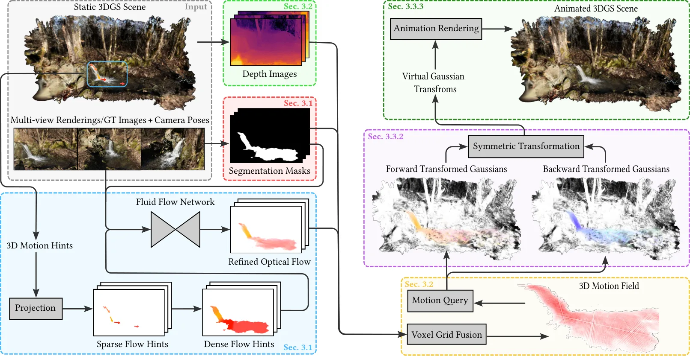
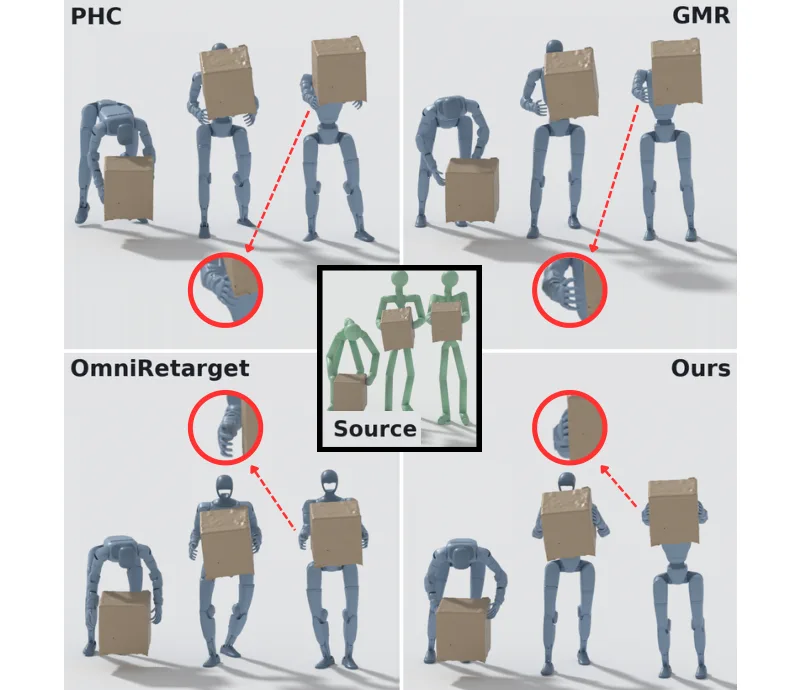
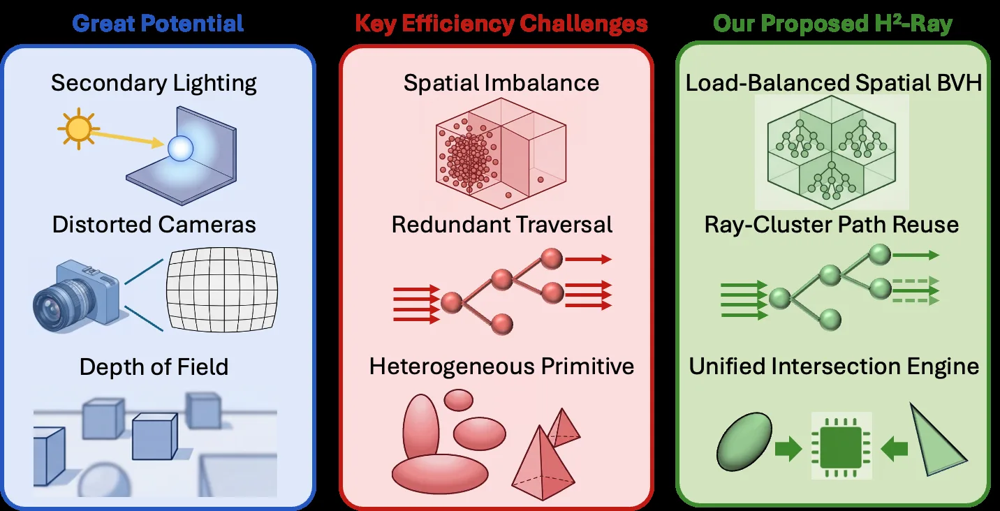
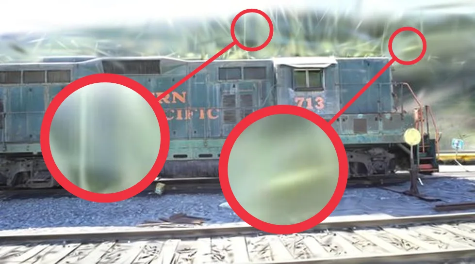
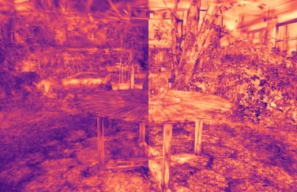

新论文 · 日期 2026-10-12 · score 20 · S层 · 3D/4D Spatial Perception · cs.CV, cs.GR
内容级别：完整单篇海报
作者：Kjell Keune, Florian Hahlbohm, Jannis M\"oller, Susana Castillo, Martin Eisemann, Marcus Magnor
评分 20/10
3D 高斯溅射3D 欧拉运动场多视角重投影融合无迹变换形变对称循环动画实时渲染
一句话工作总结：把 2D 光流经深度重投影提升为体素 3D 欧拉运动场（静态/动态命中比与视角命中阈值做细化），再用 7 个 sigma 点的无迹变换以体积感知方式形变高斯图元，配合前/后向对称动画 + sin² 不透明度调度 + 逐高斯随机相位得到无缝循环；7 场景数据集上平均 333 FPS / 3.8 GiB（静态 3DGS 416 FPS / 2.0 GiB），预处理约 55 s，运…
3D 高斯溅射（3DGS）等显式 3D 场景表示近期实现了高质量实时新视角合成，但这类方法假设场景是静态的，难以表现真实环境中普遍存在的动态现象。有规律的运动（如人或车辆）可以被采集与重建，而流水这类高频效果在随手拍摄条件下仍难以处理——因为无法进行密集多视角、高速采集。本文提出一种在静态 3DGS 场景中为水做动画的方法：不依赖动态采集，也不做物理仿真，仅生成视觉上合理的运动。方法从参考图像或模型渲染图中估计 2…
Explicit 3D scene representations such as 3D Gaussian Splatting (3DGS) have recently enabled high-quality, real-time novel view synthesis. However, these methods assume static scenes, limiting realism in the p…

新论文 · 日期 2026-10-12 · score 4 · A层 · Robotic Foundation Models / VLA · cs.RO, cs.CV
内容级别：半海报
作者：Yinlong Dai, Homanga Bharadhwaj, Dylan P. Losey
评分 4/10
零样本操作合成视频到机器人轨迹约束优化形式化语义吸引域数字孪生 CEM任务特征加权
一句话工作总结：把“冻结视频生成器产出合成演示 → 真实机器人轨迹”统一成带语义一致性（ℙ[𝒢_τ(ξ)=1]≥1−ε_sem）与物理可行性（ℙ[ξ∈ℱ_R]≥1−ε_phys）约束的优化问题，并用 Markov 不等式给出“生成质量 σ_vid 与语义吸引域半径 ρ 之比”决定成功播种概率的界；CASTER 用 LLM 抽取任务关键特征并跨多条采样视频取中位/加权参考，在 Isaac Si…
以往让机器人从人类学习往往需要真实的人类演示，而视频生成模型的进步提供了新范式：可以直接提示生成器合成该任务的视频。好处是这些合成视频发生在机器人当前环境中，无需真实人类示教；但问题是，生成的视频虽然看起来动作合理，却既缺乏物理一致性也没有机器人落地（grounding），机器人无法直接执行视频里的轨迹。本文旨在把“从合成视频生成到真实机器人轨迹”的过程形式化，指出该问题是一个约束优化问题：从合成视频中提取的物体轨…
Prior research on learning from humans often requires real human demonstrations. But advances in video generation models offer a new paradigm: we can now prompt these generators to make synthetic videos of the…

新论文 · 日期 2026-10-12 · score 4 · A层 · Robotic Foundation Models / VLA · cs.RO, cs.GR
内容级别：半海报
作者：Nicholas Ioannidis, Dun Yang, Max Smith, Tue Vu, Ziyu Zhang, Shayegan Omidshafiei, Xue Bin Peng
评分 4/10
动作重定向优先化优化零空间投影接触与足部落点保持多角色交互RL 跟踪参考轨迹
一句话工作总结：把重定向从加权多目标求和改成显式优先级层级，并在每一步用零空间投影 P^{H,λ}=I−(J^H)ᵀ(J^H(J^H)ᵀ+λI)⁻¹J^H 把低优先级梯度投影掉，只允许其沿保持高优先级误差的方向更新；利用逐帧可分性把 (Tm)×(Tm) 投影分解为 T 个 m×m 系统，复杂度从 O(T³m³) 降到 O(Tm³)，并把时间平滑/关节限位/地面穿透作为 free 目标直接累加…
动作重定向是把人类动捕数据迁移到人形机器人的关键预处理步骤。既有方法对单角色动作有效，但当涉及多角色、多物体交互时，会多出必须保持的接触与空间关系。重定向通常被表述为加权多目标优化问题，而相互冲突的目标不仅需要仔细调参，还仍可能损害重要的运动特征。本文提出 PriMoRetarget：一个把相对权重替换为显式优先级层级（priority hierarchy）的优先化重定向框架。低优先级更新被约束为必须保持高优先级目…
Motion retargeting is a critical preprocessing step for transferring human motion data to humanoid robots. While existing methods are effective for single-character motions, interactions involving multiple cha…

新论文 · 日期 2026-10-12 · score 9 · A-层 · Real-time / GPU Robotics Systems · cs.AR, cs.GR
内容级别：简报式摘要
作者：Tiancheng Zhao, Sixu Li, Yuzhou Chen, Hengyu Ding, Zhiming Pan, Chaojian Li
评分 9/10
3D 高斯光线求交负载均衡空间 BVH光线簇路径复用统一求交引擎GPU 架构实时渲染系统
一句话工作总结：面向光线求交式 3DGS 的 GPU 架构：用负载均衡空间 BVH 把非均匀高斯分布转成均衡局部遍历单元、用光线簇路径复用让邻近光线共享遍历状态、用统一求交引擎在共享 40% 浮点单元的数据通路上同时支持高斯与三角求交；8 场景上 RTX A5000 相对 RaySplats 几何平均 3.77×、最高 9.26× 加速（周期精确 RT Core 模型 + 实测 CUDA 计…
3D 高斯溅射（3DGS）是实时神经重建与渲染的强表示。现有 3DGS 系统依赖光栅化以保证效率，近期工作开始探索光线求交以支持二次光照、强畸变相机与景深效果。但与光栅化相比，光线求交式 3DGS 引入三大挑战：(1) 海量高斯图元高度非均匀的空间分布造成严重负载不均；(2) 相邻像素生成的光线往往路径高度相似，产生大量冗余遍历；(3) 同时支持高斯与三角图元会带来异构求交负载，与现有 GPU 架构不匹配。作者提出…
3D Gaussian Splatting (3DGS) is a powerful representation for real-time neural reconstruction and rendering. While existing 3DGS systems rely on rasterization for efficiency, recent work explores ray tracing t…
新论文 · 日期 2026-10-12 · score 8 · A-层 · 3D/4D Spatial Perception · cs.CV, cs.GR, cs.LG, cs.RO
内容级别：简报式摘要
作者：Jingcheng Ni, Zekun Li, Zhiyang Dou, Xiaoyan Cong, Ziyao Zeng, Hongyang Du, Randall Balestriero, Taku Komura, Srinath Sridhar
评分 8/10
空间音频流式动作生成因果 Transformerrehearsal 训练spatial feedback实时在线生成
一句话工作总结：首个从空间音频流式生成人体动作的框架：把声学内容与身体相对声源几何分别编码为 token，用带 flow 头的因果 Transformer + 因果解码器在线出动作；针对训练-推理历史不匹配提出 rehearsal training（全序列监督 + 短自回归自推演），并用 spatial feedback 从生成的根本位姿重算身体相对声源位置；SAM 上取得最优 FID 与…
建模人对空间音频的反应需要同时理解“听到了什么”与“声音从哪来”。既有工作从完整的声学与空间输入序列离线生成动作；但人在反应时并不知道接下来会听到什么。作者提出 Sonic-AMG，据其所述是首个从空间音频流式生成人体动作的框架。模型把声学内容与身体坐标系下的声源几何分别编码为 token，以此条件驱动一个带 flow 头的因果 Transformer 生成连续动作隐变量，再由因果解码器重建动作片段。标准教师强制训…
Modeling human reactions to spatial audio requires understanding both what is heard and where it comes from. Prior work generates motion offline from complete acoustic and spatial input sequences. Humans, howe…

新论文 · 日期 2026-10-12 · score 14 · B层 · Neural Rendering / 3DGS / NeRF · cs.CV, cs.GR
内容级别：简报式摘要
作者：Hongbin Ye, Haixu Liu, Shenwei Kang, Wenxiu Wei, Tinglan Wang, Hongdong Zhu, Fan Tang, Qi Gao, Yin Ma, Kai Wen, Hai Wei, Nuo Qian, Wei-Shi Zheng, Shaobo Chen, Fa-Ting Hong, Jingke Meng
评分 14/10
3D 高斯溅射剪枝组合优化 QUBO模拟退火/相干伊辛机区域预算平滑空间质量均衡渲染加速
一句话工作总结：把 3DGS 剪枝从“全局 Top-K 独立打分”改成固定预算下的组合式选择：先按空间邻近与外观相似分块并平滑块保留配额，再用代表性像素对不透明度变化的响应构造联合删除的二次近似，写成 QUBO（含单点项、两两交互与配额惩罚）并用模拟退火或相干伊辛机求解；5 个基准上在重建质量、空间均衡与渲染速度上均优于 SOTA 剪枝。
现有 3D 高斯溅射（3DGS）剪枝方法主要依赖基于独立重要性分数的全局 Top-K 选择，缺乏区域预算控制，也忽略了高斯被联合删除时的相互影响，因此无法保证整场景重建质量的均衡。作者提出 SplatQ——一种在固定预算下协同处理区域预算分配与高斯联合选择的组合式剪枝算法。SplatQ 按空间邻近性与外观相似性把高斯划分成有大小限制的块，把全局选择分解为若干特定规模的子问题；随后对基于重要性的块保留配额做平滑，避免…
Existing 3D Gaussian Splatting (3DGS) pruning methods primarily rely on global Top-K selection based on independent importance scores, lacking regional budget control and ignoring joint deletion effects. Conse…

新论文 · 日期 2026-10-12 · score 11 · B层 · Neural Rendering / 3DGS / NeRF · cs.CV, cs.GR
内容级别：简报式摘要
作者：Manuel Hofer, Thomas K\"ohler, Felix Windisch, Bernhard Kerbl, Markus Steinberger, Lukas Radl
评分 11/10
3D 高斯溅射MCMC 密度控制置信度感知加密误差驱动图元放置固定预算免先验重建
一句话工作总结：在 3DGS-MCMC 的固定预算框架内用“误差驱动”替换“不透明度驱动”的加密：新图元主要放在屏幕空间梯度大处、并优先选择学习到的低置信度图元，同时把贡献最小的图元重定位过去；24 场景平均在 100k–2M 每个预算档位都优于 3DGS-MCMC（100k 时夺回 ConeGS 1.05 dB 领先中的 0.84 dB），500k 起 PSNR/SSIM 在对比的固定预算…
3DGS-MCMC 用基于不透明度的采样与重定位取代了 3D 高斯溅射中原有的梯度驱动密度控制，已成为固定图元预算下免先验加密的事实标准。由于场景重建得越好的地方不透明度越高，这种采样会把大多数新图元送到前景，使背景重建不足；在低预算下，ConeGS、EDGS 等基于先验的方法反而更优，代价是需要预训练辐射场或稠密图像匹配以及单独的初始化阶段。作者主张在固定预算的 MCMC 框架内回归“误差驱动”的加密：其置信度感…
3DGS-MCMC has replaced the gradient-driven density control of 3D Gaussian Splatting with opacity-based sampling and relocation, and is now the de facto standard for prior-free densification under a fixed primi…